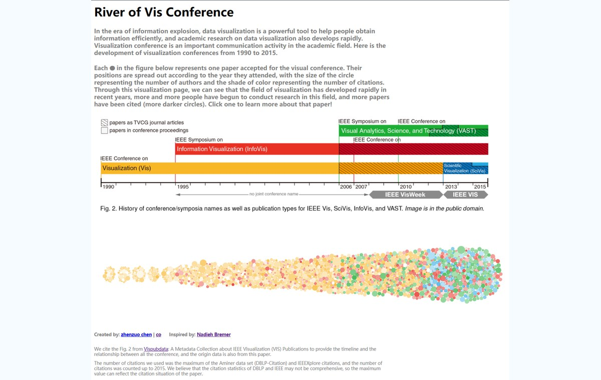

River of Vis Conference 的诞生 / 回忆录
这个项目源于北大可视化发展前沿暑校的数据集之一：可视化会议数据。暑校结束后，我和队友继续把尚未完成的想法推进成可提交、可访问的网页作品。
那时我几乎没有系统的前端基础，只能从 HTML、CSS、JavaScript 和 D3 的概念开始边学边改。过程里不断降低预期、尝试 observable 样例、调整布局和交互，也在挫败感与自豪感之间来回摇摆。

最后作品实现了会议分类颜色、被引量深浅、共同作者数量映射、圆圈高亮和 DOI 跳转等核心部分。它虽然像一个草稿，却为我后续继续学习数据可视化和前端实现提供了很真实的经验。